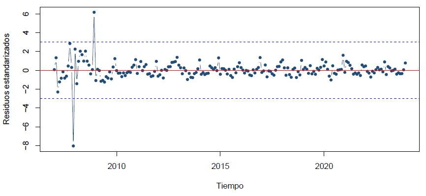
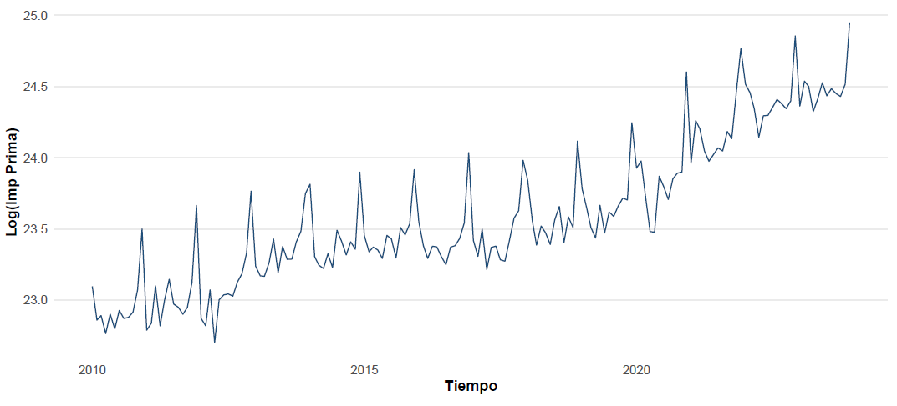
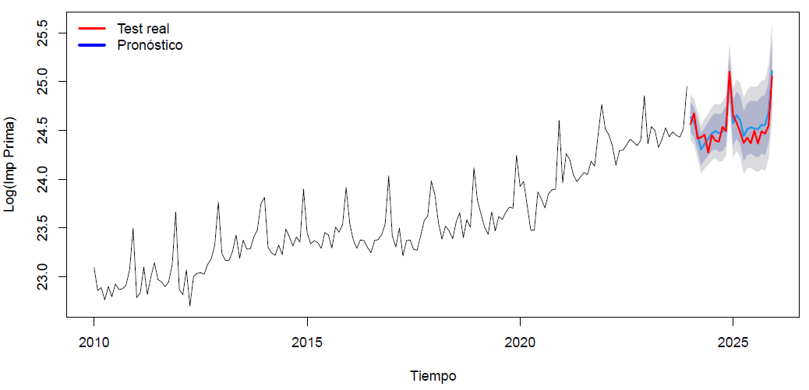
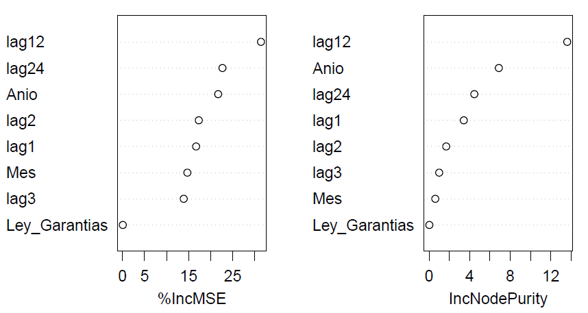
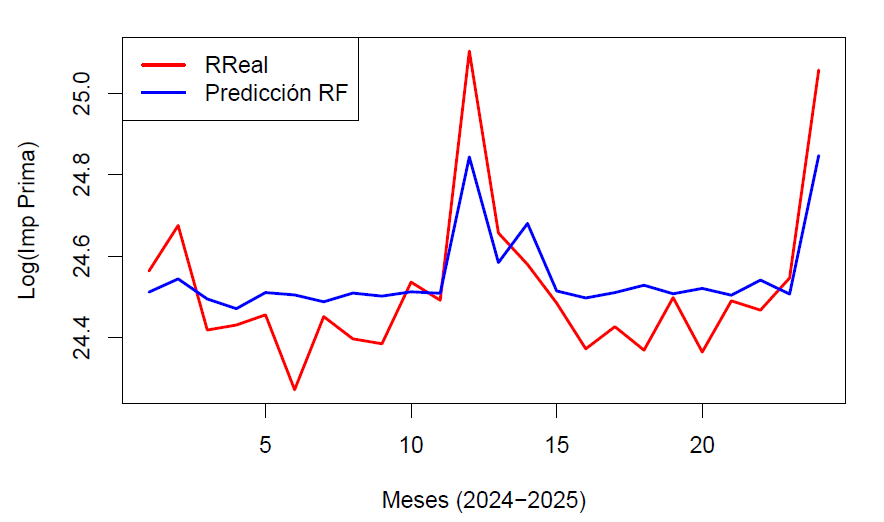

MÓDULO 2
En esta parte se construyen y comparan dos enfoques predictivos: un modelo de series de tiempo SARIMAX y un modelo de machine learning Random Forest.
Primer escenario con toda la serie histórica, incluyendo la variable de Ley de Garantías.
Segundo escenario sin el periodo más inestable de la serie, para mejorar la estabilidad del modelo.
Modelo alternativo basado en variables rezagadas y aprendizaje automático.
ESCENARIO 1
Primero se ajustó un modelo SARIMAX con toda la serie histórica, usando estacionalidad de 12 meses e incluyendo la Ley de Garantías como variable exógena.
Se probaron varios modelos SARIMAX teniendo en cuenta la estacionalidad mensual, los gráficos FAC/FACP y criterios como AIC, BIC, RMSE y MAPE.
Los residuos estaban centrados cerca de cero, pero mostraban variabilidad no constante, autocorrelación, falta de normalidad y valores extremos.

Al inicio de la serie se observan movimientos fuertes y algunos valores extremos.
La prueba ARCH LM obtuvo un p-value < 2,2e-16, por lo que se concluye que la varianza de los residuos no era constante.
Se ajustó GARCH sobre los errores del SARIMAX para revisar si el problema estaba relacionado con la volatilidad de los residuos.
El ajuste GARCH ayudó a revisar la volatilidad, pero no mejoró de forma clara la predicción central. Por eso, este primer escenario se tomó como diagnóstico y se construyó un segundo escenario desde 2010, con una serie más estable.
ESCENARIO 2
Se construyó un segundo escenario utilizando la información desde enero de 2010 hasta diciembre de 2025, con el fin de trabajar con una serie más estable para la selección del modelo final.

Desde 2010, la serie muestra un crecimiento progresivo de las primas de Fianzas y algunos picos que se repiten en ciertos meses del año.
Como la serie cambia con el tiempo y presenta patrones que se repiten por meses, SARIMAX permite trabajar esa información dentro del modelo e incluir la Ley de Garantías como variable externa.
Se aplicaron las pruebas de Dickey-Fuller y Phillips-Perron para revisar la presencia de raíz unitaria en la serie.
Dickey-Fuller presentó un p-value = 0,1439, mientras que Phillips-Perron presentó un p-value = 0,0100. Como las pruebas dieron señales diferentes, se usaron como guía para probar varias estructuras SARIMAX.
La revisión inicial sugirió una diferencia ordinaria d = 1 y una diferencia estacional D = 1.
Después de aplicar las diferencias, la serie se observó más estable visualmente.
Se probaron varios modelos SARIMAX teniendo en cuenta los gráficos FAC/FACP, el criterio de mínima varianza y la selección del modelo final se basó en los criterios AIC, BIC, RMSE y MAPE, verificando además el cumplimiento de los supuestos del modelo.
| Modelo | Especificación | Variable externa |
|---|---|---|
| Modelo 1 | SARIMAX(1,1,1)(0,1,1)[12] | Ley de Garantías |
| Modelo 2 | SARIMAX(1,0,1)(1,1,1)[12] | Ley de Garantías |
| Modelo 3 | SARIMAX(2,0,2)(1,1,2)[12] | Ley de Garantías |
| Modelo 4 (auto.arima) | SARIMAX(0,1,1)(0,1,1)[12] | Ley de Garantías |
| Modelo | AIC | BIC | RMSE | MAPE |
|---|---|---|---|---|
| Modelo 1 | -191,0567 | -175,8396 | 0,1169 | 0,3720 |
| Modelo 2 | -190,7215 | -172,4224 | 0,1168 | 0,3769 |
| Modelo 3 | -197,1390 | -169,6903 | 0,1094 | 0,3570 |
| Modelo 4 (auto.arima) | -193,0178 | -180,8441 | 0,1169 | 0,3713 |
Después de comparar los modelos candidatos, se revisaron los dos modelos con mejor desempeño en el conjunto de prueba. El Modelo 3 presentó mejores métricas y se seleccionó como modelo final para el escenario SARIMAX.
| Modelo | RMSE | MAE | MAPE |
|---|---|---|---|
| Modelo 3 | 0,0935 | 0,0850 | 0,3471 |
| Modelo 4 | 0,1698 | 0,1475 | 0,6025 |
VALIDACIÓN DEL MODELO
Después de seleccionar el Modelo 3, se revisaron los supuestos sobre los residuos y se evaluó su desempeño en el conjunto de prueba 2024-2025.
Modelo seleccionado: SARIMAX(2,0,2)(1,1,2)[12] | Variable exógena: Ley de Garantías
H₀: La media de los residuos es igual a cero.
H₁: La media de los residuos es diferente de cero.
Prueba: t.test
p-value: 0,1384
Decisión: No se rechaza H₀.
H₀: No existen efectos ARCH en los residuos.
H₁: Existen efectos ARCH en los residuos.
Prueba: ARCH LM
p-value: 0,2875
Decisión: No se rechaza H₀.
H₀: Los residuos no presentan autocorrelación.
H₁: Los residuos presentan autocorrelación.
Prueba: Ljung-Box
p-value: 0,0377 y 0,0355
Decisión: Se rechaza H₀.
H₀: Los residuos siguen una distribución normal.
H₁: Los residuos no siguen una distribución normal.
Prueba: Shapiro-Wilk
p-value: 0,1564
Decisión: No se rechaza H₀.
Revisión: residuos estandarizados con bandas de -3 y 3.
Resultado: un punto supera ligeramente el límite superior.
Conclusión: no hay presencia fuerte ni repetida de valores extremos.
H₀: No existe correlación entre Ley de Garantías y residuos.
H₁: Existe correlación entre Ley de Garantías y residuos.
Prueba: Pearson
p-value: 0,256
Decisión: No se rechaza H₀.

El modelo SARIMAX aplicado a la serie de producción de Fianzas presenta un buen desempeño predictivo en el conjunto de prueba, ya que el pronóstico sigue de cerca el comportamiento observado durante 2024-2025.
Aunque no cumple completamente el supuesto de ausencia de autocorrelación en los residuos, el modelo mejora frente al primer escenario y representa de forma más adecuada la dinámica reciente de la serie.
MACHINE LEARNING
Como complemento al modelo SARIMAX, se implementó un Random Forest para series de tiempo. Para que el modelo pudiera usar información del pasado, se construyeron variables de rezago a partir de la serie de primas.
Random Forest no reconoce por sí solo el orden de los meses. Por eso se agregaron rezagos, que le muestran al modelo qué pasó en meses anteriores y en el mismo mes de años pasados.
El modelo se construyó con año, mes, Ley de Garantías y rezagos de la serie: lag1, lag2, lag3, lag12 y lag24.
Como lag24 necesita conocer el valor del mismo mes de hace dos años, se pierden las primeras 24 observaciones. Por eso, el modelo empieza desde enero de 2012.
| Variable | Descripción |
|---|---|
| Anio | Año de la observación |
| Mes | Mes de la observación |
| Ley_Garantias | Dummy de Ley de Garantías |
| lag1 | Prima del mes anterior |
| lag2 | Prima de hace 2 meses |
| lag3 | Prima de hace 3 meses |
| lag12 | Mismo mes del año anterior |
| lag24 | Mismo mes hace 2 años |
Entrenamiento
2012-2023
144 observaciones
Prueba
2024-2025
24 observaciones

La variable más importante fue lag12, lo que muestra que el valor del mismo mes del año anterior tiene mucho peso en la predicción. En cambio, Ley_Garantias tuvo una importancia muy baja dentro de este modelo.
RESULTADOS DEL MODELO
El modelo se evaluó con los datos de 2024 y 2025, comparando las primas reales frente a las predicciones generadas por Random Forest.
-0,0271
Error medio
0,1158
Error cuadrático medio
0,0930
Error absoluto medio
0,3783%
Error porcentual

El modelo logra seguir la tendencia general de la serie durante 2024 y 2025. Sus predicciones se mantienen cerca del comportamiento real en varios meses.
El modelo se acerca a algunos aumentos, como diciembre de 2024 y diciembre de 2025, pero no alcanza completamente los valores más altos observados.
Random Forest tiene un desempeño razonable, aunque tiende a suavizar los picos porque combina el resultado de muchos árboles de decisión.
En este modelo, la predicción depende principalmente de los rezagos de la serie. La Ley de Garantías no aparece como una variable importante dentro del Random Forest, por lo que su efecto se observa mejor desde el modelo SARIMAX.